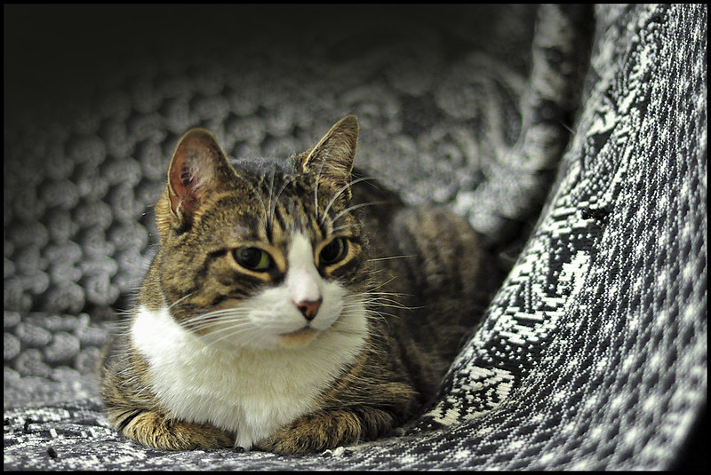
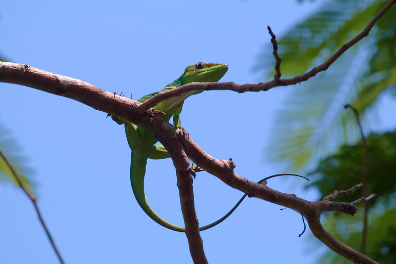
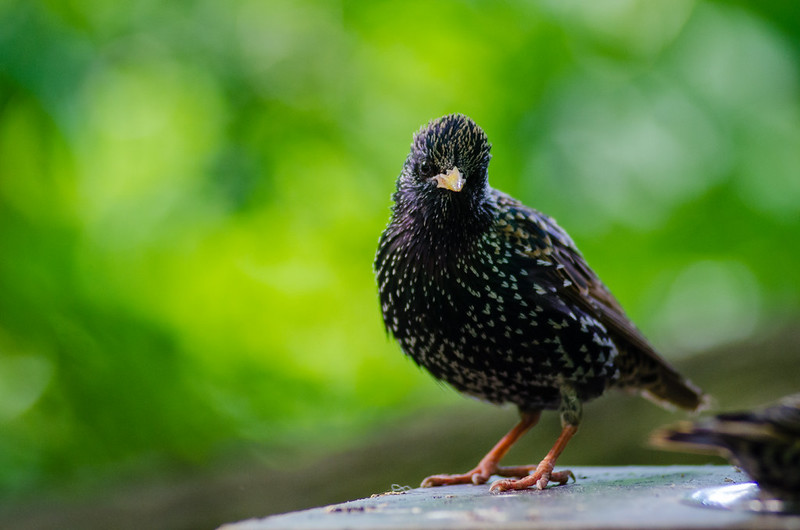
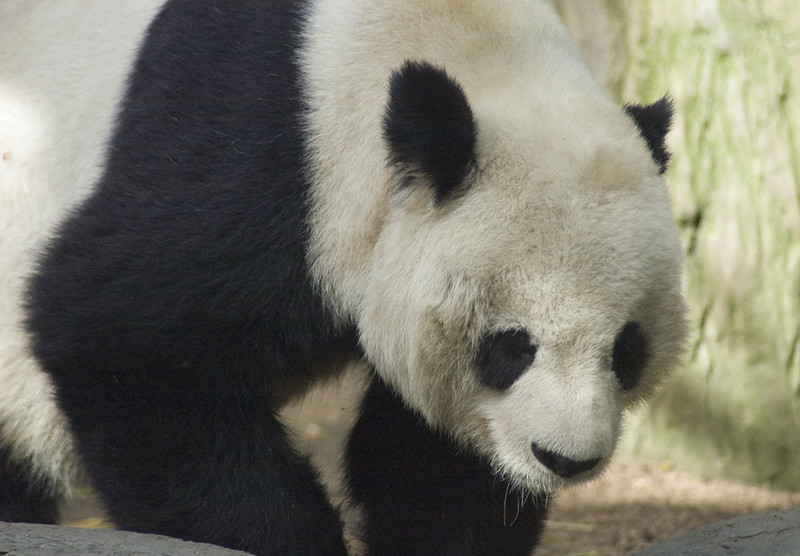
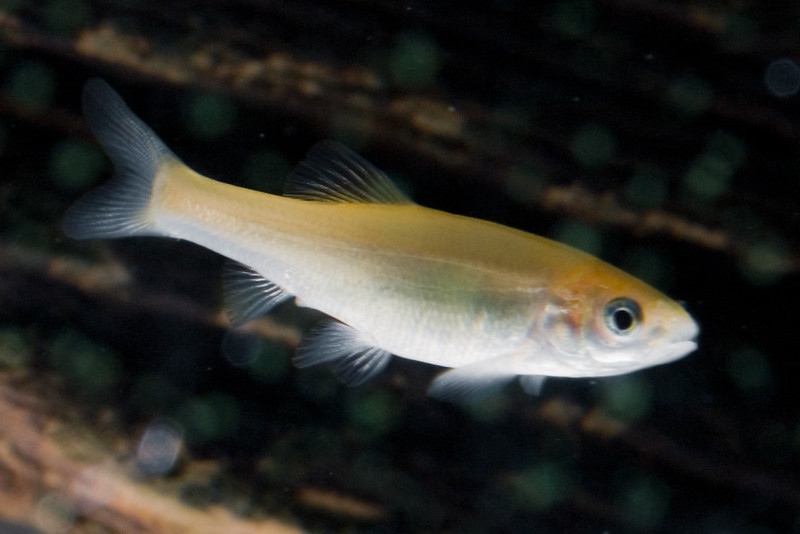
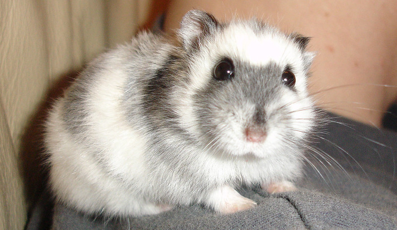

Animals I like
Here I will name a few different animals, and
include pictures and the reasons I like said animals.
Cats

I appreciate the mischievious nature of them.
Lizards

I find the nature of lizards similar to cats, they share what looks like a lack of care, but lizards lack that catlike elegance that the cats posess.
Birds

I think birds are fairly interesting. They are as intelligent as they are goofy, which is an amazing combination to me.
Pandas

I like pandas because they are like a cross between the bears that we're familiar with and a sloth, making them a little less threatning and lessening what I consider to be the biggest negative of the bears we have here in Washington.
Fish

I think most fish are very silly looking, which is one thing I appreciate about them.
Hamsters

I find hamsters to be very expressive even though they are incredibly small creatures that would have small brains by proxy.